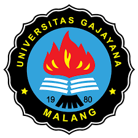

|  | Sejarah Universitas Gajayana Malang |
Sejak terbentuk menjadi universitas, Uniga memiliki tiga fakultas, yakni Fakultas Ekonomi dan Bisnis, Fakultas Teknik dan Informatika, dan Fakultas Ilmu Sosial dan Budaya. Fakultas Ekonomi dan Bisnis (FEB) memiliki Program Studi Akuntansi, Program Studi Manajemen, dan Program Studi Ekonomi Pembangunan-Perbankan. Sementara Fakultas Teknik dan Informatika (FTI) mempunyai Program Studi Teknik Elektro, Program Studi Teknik Mesin, dan Program Studi Sistem Informasi. Sedangkan Fakultas Ilmu Sosial Budaya (FISB) terdiri dari Program Studi Bahasa dan Sastra Inggris, Program Studi Psikologi, dan Program Studi Ilmu Komunikasi. Selain itu terdapat pula Program Pascasarjana, yaitu Program Magister dan juga Program Profesi Akuntansi (PPA).
Kampus yang memiliki semboyan We Give the Best ini terus melakukan langkah untuk mewujudkan visi Universitas Gajayana Malang yang mengedepankan pelayanan terbaik bagi mahasiswa. Mereka ingin mengantarkan mahasiswa mempunyai daya saing yang tinggi. Komitmennya adalah memberikan pelayanan terbaik bagi mahasisawa, selalu melakukan inovasi proses pembelajaran, sarana dan prasarana pendidikan untuk mencapai keunggulan kompetensi lulusan.
Pihak kampus mendisain kurikulum berbasis kompetensi yang adaptif dengan tuntutan stakeholders untuk meningkatkan proses belajar-mengajar. Sementara itu, untuk menjaga mutu lulusan, dibentuk pula tim Penjaminan Mutu dan Audit Akademik Internal. Selain itu, ada langkah untuk menambah kelengkapan sarana bagi ajang pengasahan bakat, minat dan kreatifitas mahasiswa serta didukung oleh tenaga pengajar yang mayoritas bergelar S2 dan S3. Selain itu, yang tak kalah pentingnya adalah pengadaan gedung kuliah yang representatif, perpustakaan dengan koleksi buku yang lengkap terbitan terbaru, laboratorium Bahasa Inggris, laboratorium komputer dan internet hotspot area, serta tersedianya Asrama Mahasiswa, Poliklinik, dan sarana pengembangan bakat/minat mahasiswa.
Uniga memiliki Organisasi Kemahasiswaan, seperti Badan Eksekutif Mahasiswa (BEM) dan Unit Kegiatan Mahasiswa (UKM). Mulai dari Keluarga Mahasiswa Pecinta Alam (KAPA’85), Resimen Mahasiswa (SATMENWA 872/VWC), Lembaga Dakwah Kampus (LDK An-Nur), Teater NISBI, Korps Sukarela (KSR-PMI) Unit UNIGA Malang, Gajayana Photografi (G-phoc), Gajayana Music Club (GMC), Paduan Suara (PARAVEGA), hingga Unit Aktivitas Olahraga (UNAOR UNIGA Malang). Ada pula sembilan Himpunan Mahasiswa Jurusan (HMJ), sesuai dengan nama jurusan di kampus ini, yakni Himpunan Mahasiswa Manajemen (HIMAPRODI-M), Komunitas Studi Akuntansi (KSA), Himpunan Mahasiswa Sistem Informasi (HIMSI), Himpunan Mahasiswa Bahasa dan Sastra Inggris (HIMASTRA), Himpunan Mahasiswa Psikologi (HIMPSIKO), Himpunan Mahasiswa Mesin (HMM), Himpunan Mahasiswa Elektro (HME), Himpunan Mahasiswa Ilmu Komunikasi (HIMKOMUNIKA), dan Himpunan Mahasiswa Ekonomi Pembangunan-Perbankan (HIMEP).
Universitas Gajayana berada di Jalan Mertojoyo Blok L, Kelurahan Merjosari, Kecamatan Lowokwaru, Kota Malang. Lokasinya cukup strategis berada di kompleks pendidikan. Di sekitar kampus ini terdapat pula Universitas Brawijaya Malang (UB), Universitas Islam Negeri (UIN) Maulana Malik Ibrahim, dan Institut Teknologi Nasional (ITN).